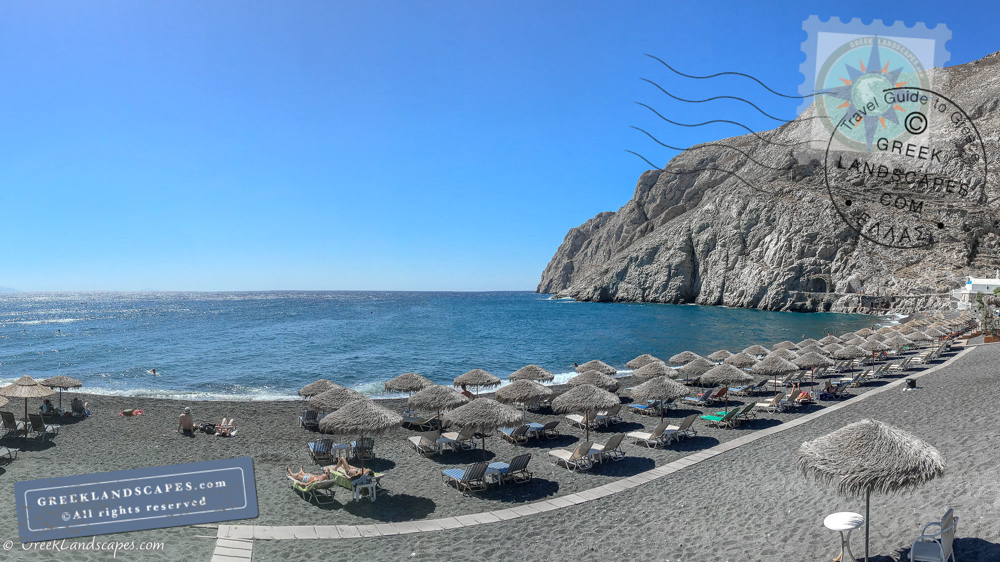
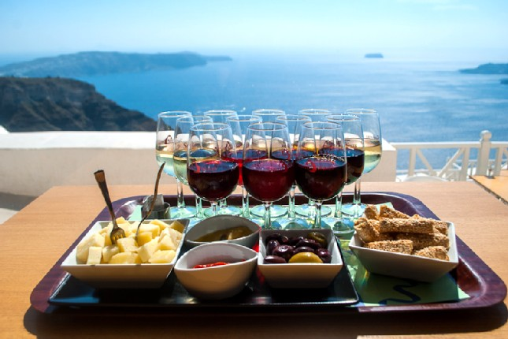
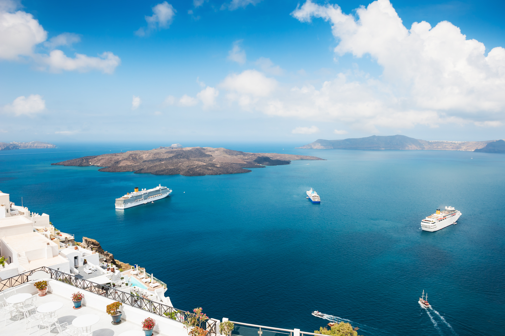
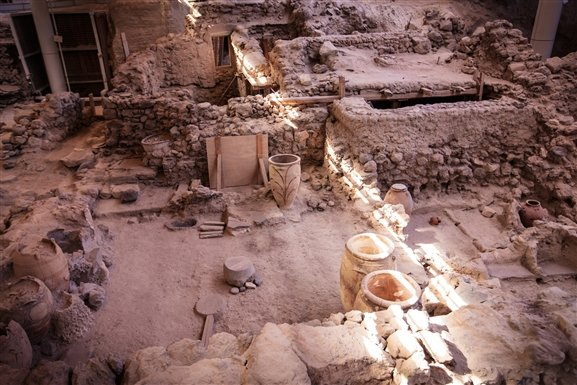

HOME | FACTS | BEST TIME TO TRAVEL | PLACES OF INTEREST | CURRENCY | OTHER PERTINENT INFO | CONTACT US
Places of Interest in Santorini, Greece

Kamari Beach!

Wine Tours

Boat Tours

Ancient Akrotiri Archaeological Site